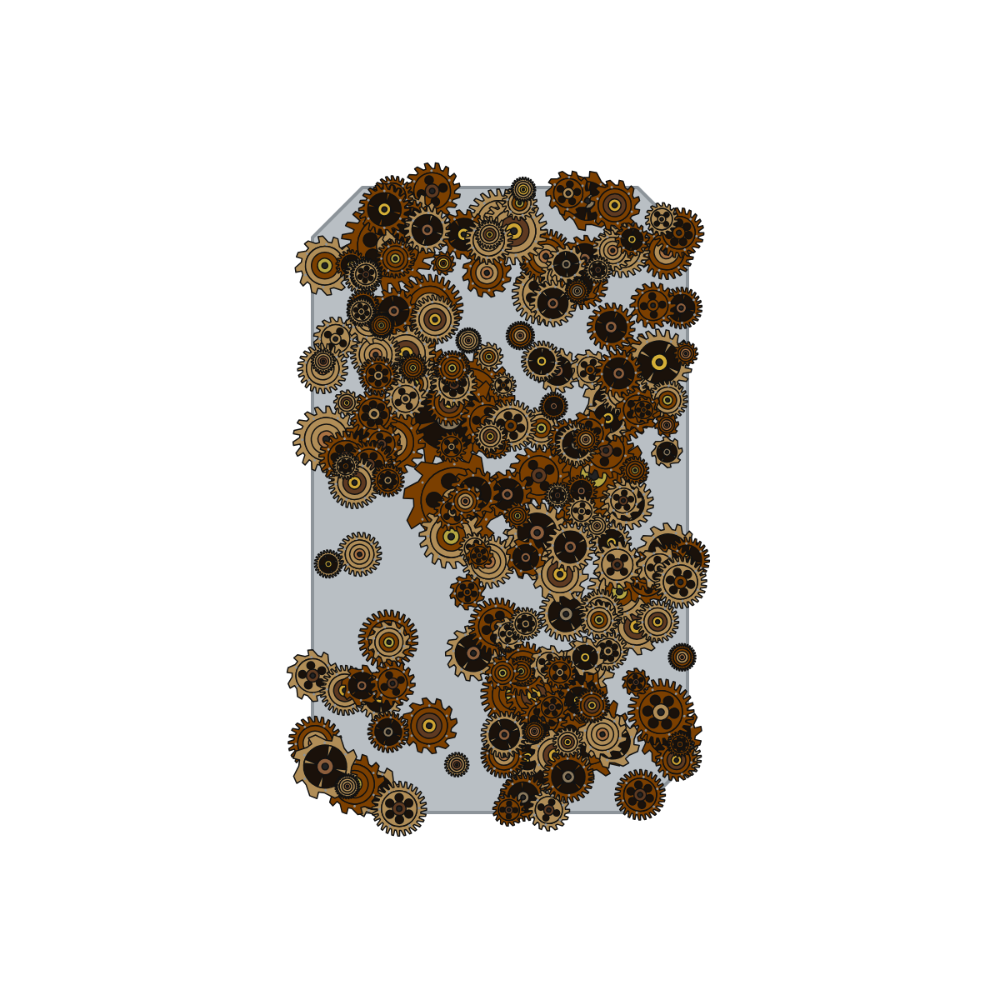
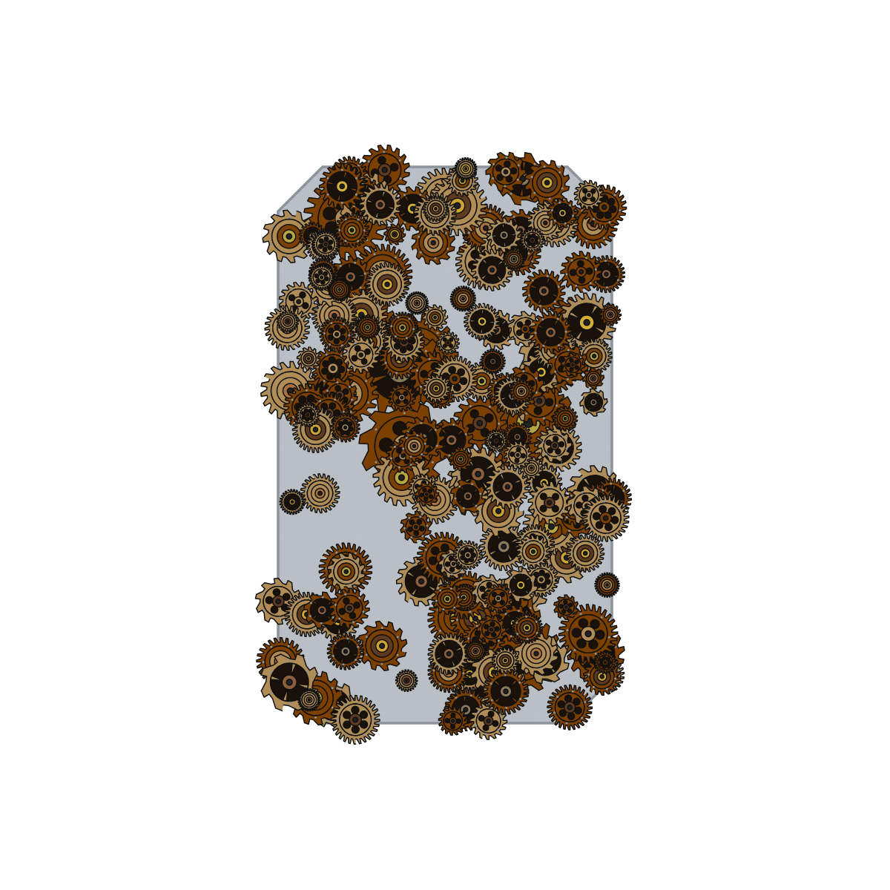

The HTML canvas and the XCS canvas for every Shape Fill style, both captured from the same page load so the two views draw the same design. Pendant preset, brushed steel blank, Outline Weight 1×, margin 0. Overlay fades between them; Difference shows where they disagree.


What to look for. The blank is the same size and shape in both. The XCS canvas also draws the bed grid, which the HTML canvas has no equivalent of, and it does not clip at the bed edge — so anything a style scatters past the blank stays visible there and is cropped in the HTML canvas. ΔL is the difference in mean luminance over every non-transparent pixel, on a 0–255 scale. Antialiasing between the two renderers sets a floor of about ±3.5, so nothing here reads as a visible difference. Measured 2026-09-16.